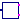
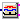

Control components for DC to AC converters
Currently there are only three-phase PWM implemented (not polyphase).
Extends from Modelica.Icons.Package (Icon for standard packages).
| Name | Description |
|---|---|
|  PWM | Pulse width modulation |
|  SVPWM | Space vector pulse width modulation |
| IntersectivePWM | Intersective PWM |
Pulse width modulation
Let the user choose the PWM type from:
Extends from Modelica.Blocks.Icons.Block (Basic graphical layout of input/output block).
| Name | Description |
|---|---|
| pwmType | PWM Type |
| f | Switching frequency [Hz] |
| startTime | Start time of PWM [s] |
| uMax | Maximum amplitude of signal |
| refType | Type of reference signal |
| Name | Description |
|---|---|
| u[2] | Reference space phasor |
| fire_p[m] | Positive fire signal |
| fire_n[m] | Negative fire signal |
Space vector pulse width modulation
For a three-phase system, 8 space vectors are available according to the following switching patterns:
Vector 1..6 form a hexagon, vector 0 and 7 are of length 0.
First, the space vector is limited, and the sector of the hexagon is determined where the input space vector u is located; then the angle of the space vector within this sector 0≤φ<60° is calculated.
The input space vector is averaged by u = ta*ua + tb*ub + t0*0, where ua is the space vector at the left border of the sector and ub is the space vector at the right border of the sector. If necessary, a zero length vector is applied additionally.
The relative time spans for averaging over one switching period are determined by the following equations:
To obtain the positive fire signal, the switching time spans are distributed symmetrically: t0/4 + ta/2 + tb/2 +t0/2 + tb/2 + ta/2 + t0/4
The switching pattern of the negative fire signal is just the inverse of the positive fire signal.
Extends from Modelica.Blocks.Interfaces.DiscreteBlock (Base class of discrete control blocks).
| Name | Description |
|---|---|
| f | Switching frequency [Hz] |
| samplePeriod | Sample period of component [s] |
| startTime | First sample time instant [s] |
| uMax | Maximum length of space vector = half diagonal of hexagon |
| Name | Description |
|---|---|
| u[2] | Reference space phasor |
| fire_p[m] | Positive fire signal |
| fire_n[m] | Negative fire signal |
Intersective PWM
The intersective PWM transforms the input space phasor u to the three-phase voltages, and compares them with the reference signals. As long as the phase voltage is greater than the corresponding reference signal, the corresponding fire signal is true. The switching pattern of the negative fire signal is just the inverse of the positive fire signal.
The user can choose from 4 different reference signals:
Extends from Modelica.Blocks.Icons.Block (Basic graphical layout of input/output block).
| Name | Description |
|---|---|
| f | Switching frequency [Hz] |
| startTime | Start time of PWM [s] |
| uMax | Maximum amplitude of signal |
| refType | Type of reference signal |
| Name | Description |
|---|---|
| u[2] | Reference space phasor |
| fire_p[m] | Positive fire signal |
| fire_n[m] | Negative fire signal |